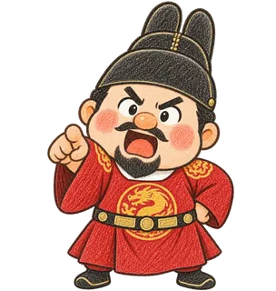
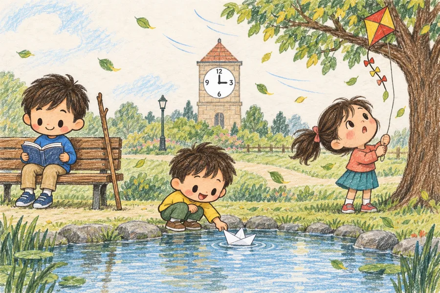

바른 문장 쓰기문해력이 자라는 문장구조·문법
3회 복습장소와 시간을 알려 주는 에 · 에서
이름날짜

1
질문에 답하기
질문이 장소를 묻는지 시간을 묻는지 찾고, 어울리는 대답을 골라요.
장소는 ‘어디에? 어디에서?’를, 시간은 ‘언제?’를 물어요.
장소 뒤에는 끝 말을 보고 에·에서를 골라요. 시간 뒤에는 ‘에’를 써요. 오늘·어제·내일·지금은 에 없이 써요.
바른 문장 쓰기 · 3회 복습 · 앞뒤 문맥 살피기
앞뒤 문장이
힌트로다!
힌트로다!

2
문장 카드 잇기
왼쪽 문장 카드를 빈칸에 넣으면 자연스러운 곳과 선으로 이어요.
지도 메모: 두 카드는 조사만 다릅니다. ‘에’는 가서 닿는 곳·있는 곳에, ‘에서’는 떠나온 곳·무엇을 하는 곳에 어울립니다. 문맥 속 시간 낱말(아침에·저녁에·월요일에)에는 늘 ‘에’가 쓰인 것도 함께 짚어 주세요. 끝 말이 같아도 앞 문장에 따라 뜻이 달라지는 것을 소리 내어 이어 읽으며 확인하게 해 주세요.
바른 문장 쓰기 · 3회 복습 · 짧은 글 속 장소·시간 뒤 에·에서 쓰기
장소인지 시간인지
먼저 살펴보거라!
먼저 살펴보거라!

3
빈칸 채우기
글의 흐름을 생각하며 빈칸에 ‘에’나 ‘에서’를 직접 써요. 장소인지 시간인지 먼저 살펴요.
글마다 쓴 답은 바꿔도 그대로 남아요.
지도 메모: 해설은 이 글의 뜻에 맞는 예시입니다. 에·에서는 받침과 상관없습니다. 장소 뒤에서는 끝 말이, 시간 뒤에서는 늘 ‘에’입니다. 다른 글자를 썼다면 빈칸 앞 낱말이 장소인지 시간인지, 빈칸 뒤 끝 말(있어요·가요·~해요·나와요)이 무엇인지 함께 살펴 주세요.
바른 문장 쓰기 · 3회 복습 · 질문을 따라 한 편의 글로
질문을 따라 쓰면
멋진 글이 되느니라!
멋진 글이 되느니라!
4
그림 보고 쓰기
그림을 보고, 알맞은 단계를 골라 써요.

바른 문장 쓰기 · 3회 복습 · 나의 학습 돌아보기
어떻게 공부했는지
돌아보는 것도 실력이로다!
돌아보는 것도 실력이로다!
5
학습 돌아보기
예상한 시간과 실제로 걸린 시간을 견주어 보고, 오늘 공부를 돌아봐요. 알맞은 것을 고르기만 해도 돼요.
시작한 시각-
끝낸 시각-
시작부터 끝까지-
예상한 시간-
실제 학습 시간-
멈춘 시간-
4쪽 끝의 「다 했어요」를 누르면 시간이 여기에 정리돼요.
예상한 시간 분시작 끝 실제 걸린 시간 분
예상보다 → ○ 빨랐어요 ○ 비슷했어요 ○ 오래 걸렸어요